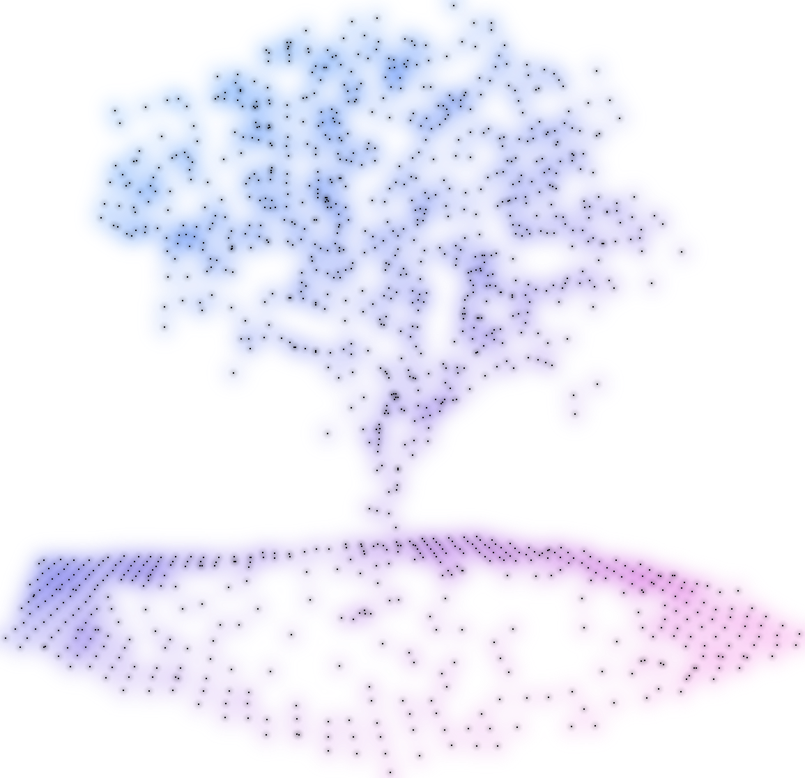
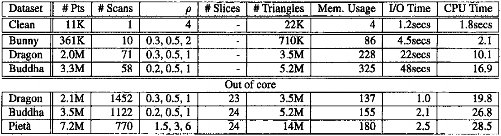
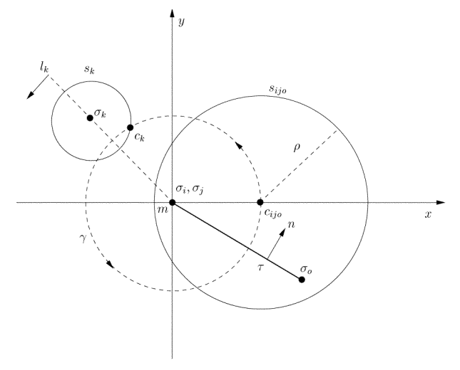
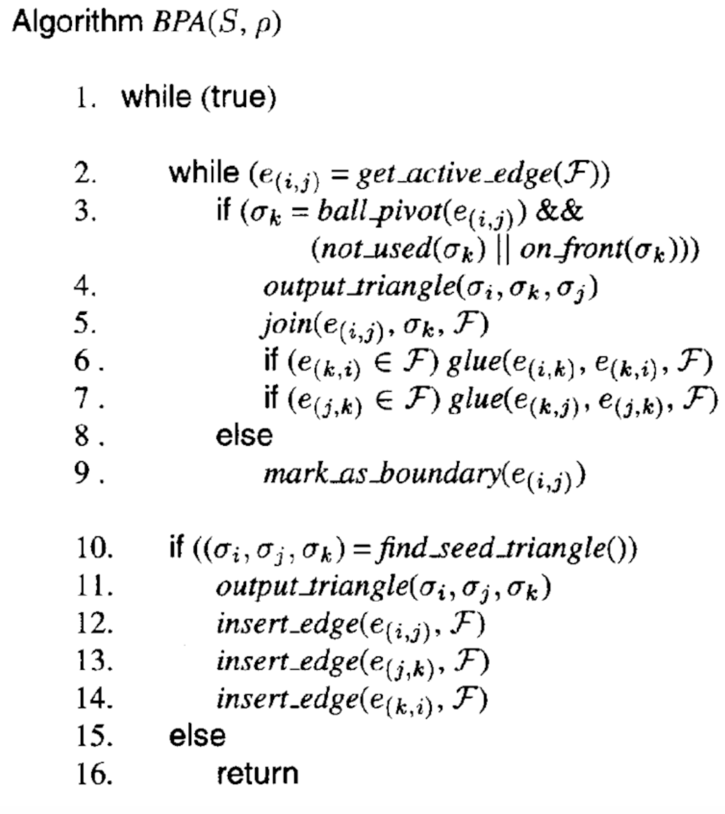
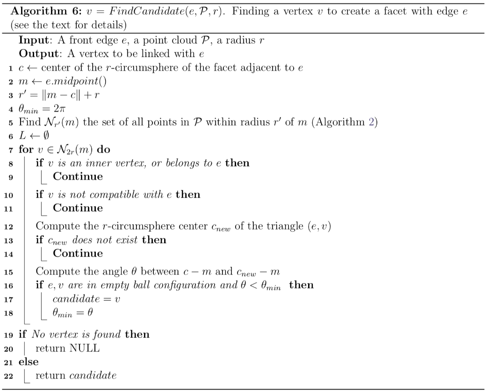
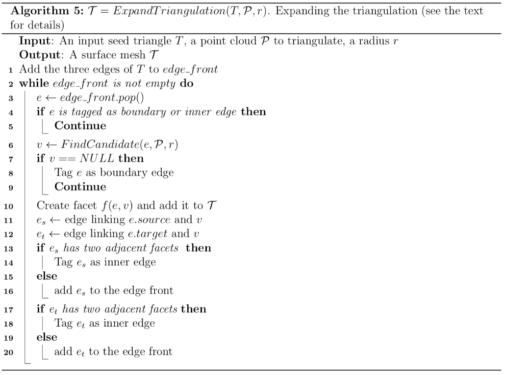
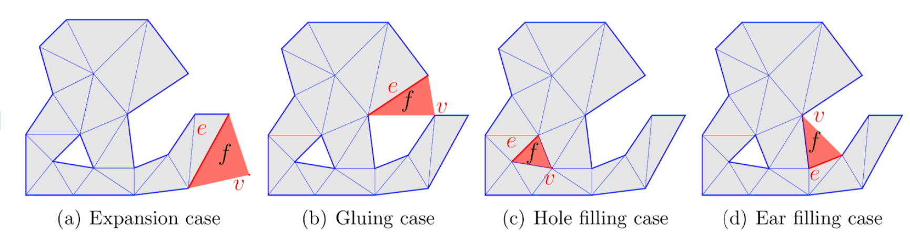
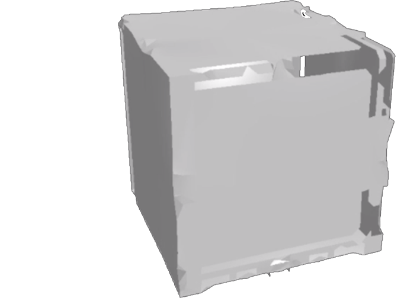

Point Cloud → Mesh Converter
Abstract
Given a point cloud, how can we convert it into a mesh to create a model of the scanned object? With just a cloud of points it can be hard to tell what the points represent. By converting the point cloud into a mesh, we can visualize a 3D scan with much more clarity, especially if the point cloud is sparse or when zooming in on the point cloud. Additionally, even with a dense point cloud, it could be hard to tell where the surface is. 3D scanning is used in autonomous driving, mapping landscapes/terrain, architecture, and much more. For our final project we implemented surface reconstruction from a set of 3D points using the Ball-Pivoting Algorithm.
Our group decided to work on Mesh reconstruction since we had heard about point-cloud reconstruction in AR & VR and wanted to try it ourselves. We did research on several different algoritms to use and ultimately decided to use the Ball-Pivoting algorithm. The algorithm is very efficient and gives us good results, although it requires that we provide a cleanly-spaced set of inputs. Unfortunately, it is not openly available for use since it is patented by IBM. We found that implementing the algorithm ourselves was very difficult, and required a large amount of debugging to fix the issues that arose from our implementations. We also needed to convert the input point cloud files we found to a format that would be easy to render from; we eventually settled on using .ply files for this purpose.
Background Research
Before we dove into this project, we entertained some methods of implementation: tri-mesh, quad-mesh, Poisson reconstruction, constrained Poisson-disk sampling, Marching Cube algorithm, Ball-Pivoting algorithm. We briefly researched into many more related topics such as registration, resampling, color/normal/scalar fields handling, statistics computation, sensor management, interactive or automatic segmentation, display enhancement.
After receiving feedback on our proposal, we quickly scrapped the idea of using Poisson-related algorithms. We narrowed down our first algorithm to explore in-depth to be the Ball-Pivoting algorithm, as it seemed to be well-documented and cleanly applicable.
We conducted much of our premilinary research via reading published, highly-cited papers, which will be listed at the bottom of this page. From these, we will summarize the results proving performance analysis comparisons between different surface reconstruction algorithms we were considering prior to implementation.
In the comparison paper, tangent-plane estimation, PCA, Tight Cocone, and Power Crust algorithms / methods are all quickly dismissed for having too many issues handling noisy and/or low-density point clouds, or they simply have poor runtimes. Ball-Pivoting algorithm and Poisson surface reconstruction performed better, albeit Ball-Pivoting required parallelization optimizations to perform better. Following a TA's recommendation to not pursue Poisson, we are left with Ball-Pivoting algorithm (hereinafter defined as BPA) to consider.
The Ball-Pivoting Algorithm (BPA) is considered to be an efficient surface reconstruction method (with optimization applied). At a high level, in the algorithm, a ball is constructed with a pre-defined radius input and is "rolled" across the point cloud, creating triangular meshes, which results in a web of 3D interconnected triangular meshes. There are three key parameters to tweak which result the quality of output: the radius of the ball, the maximum allowable angle threshhold between edges, and the smallest allowable clustering radius between points.
Citing from (Bernardini 1999), we see that the algorithm features many O(1) calls; where loops occur, the ball pivots operate upon an O(n) number of pivots. Any algebra performed results in more O(1) calls. To find and test points against a triangle, we encounter a worst-case runtime of O(B^3) steps, which the paper argues reduces to O(1) due to B being a constant size of candidate points. Overall, Bernardini argues that an optimized implemenation uses "O(n+L) memory, where L is the number of cells in the voxel grid," and n is the "data, the...advancing front..., and the candidate edge queue. The table below demonstrates information about runtime, memory usage, and I/O time relative to a 450MHz Pentium II Xeon; thus, we would expect considerably faster performance on a modern quad-core Intel CPU - likely many magnitudes higher.
 *Sample of the table from Bernardini 1999General Approach

We start with a point cloud, p, that represents the surface of the object we are trying to create a mesh representation for. We first create an original "seed" triangle by choosing 3 points that are close enough to be in contact with a ball of radius r, with a valoue of our choice. We then rotate this ball around two of these points until we find a third point; this third point forms an edge which we use to expand off of the seed triangle.
This process continues until there are no more points that we can expand off of from the currently stored triangles; after this, we find a new seed triangle and continue the process. We continue our process until there are no more available seed triangles, whereupon we stop and should have a finished mesh.
Technical Approach

From the IPOL Journal Archive, we were able to have access to a library of .txt files that contained the 3D points and their normals in x y z nz ny nz format, with optional trailing r g b values. Our first step was to render the point cloud using OpenGL, referencing the renderer implemented from Project 2: MeshEdit.
This paper used an octree to make BPA more efficient, but we used a 3D array for storing the spacial data as a grid of voxels. This is so we can have quick access of the neighboring points when we “roll” the ball. We set the side lengths of the voxels to be the diameter of the ball, which we obtained by averaging the distances between points. While this structure was efficient and intuitive a large amount of memory necessary to store the entire point cloud within the voxels.
 To find the seed triangle, we used the naive method of just searching (iterating) through the points until 3 vertices that neighbor each other are found. Then for expanding the triangulation, we first need to find a candidate vertex (Algorithm 6) that we can pivot the ball towards. There are four different cases for rotating the ball around an edge (see diagram). This process is outlined above (Algorithm 5).
We expand triangulation until a candidate can no longer be found, in which case we repeat the step of finding a seed triangle and so on until there are no more that can be found/satisfy the conditions. Afterwards, we repeat the entire process with different radii balls.
Problems Encountered & Lessons Learned
 We originally ran into issues with a large number of vertices being left out of the final mesh. To resolve this, we tried running the algorithm multiple times, with different radii sizes. This allowed us to fill in triangles that were being left empty otherwise. We also found that it was incredibly difficult to render the output meshes very quickly, and needed to increase the runtime of our algorithm to make it render at a reasonable pace. In addition, there were issues with the edge cases of the algorithm - our code would not always connect every triangle from the outside and surrounding cases (ones that are on the edge of the mesh and ones formed by 3 other triangles that use the three edges of the excluded triangle). Unfortunately, this issue was not fully resolved. We did also have problems when trying to render our output files; we originally tried to use the built-in renderer, but found that there were issues with halfedge construction. To fix this, we had to effectively build our own bootleg renderer.
To the right is a photo of our first failed cube mesh, rendered on a NVIDIA M5000 Quadro after many hours.
We learned a lot about File IO because of the conversion processes we used to help in rendering. In understanding how to render our output, we also learned a lot about CGL. We also underestimated how tricky the Ball-Pivoting algorithm was, and found that it still isn’t a perfected algorithm. It would’ve been better if we had worked on implementing it a lot earlier rather than assuming it would not have any bugs.
Results
 Mesh
Mesh Mesh
Mesh MeshVideoVideoVideo
MeshVideoVideoVideoMilestone Video & Slides & Final Presentation
Contributions
- Rohit created the code to parse input files, worked on the ball-pivoting algorithm, and worked on the final report.
- Jessica worked on the ball-pivoting algorithm and created the code to render point clouds, as well as working on the final report.
- Bryan worked on the adaptation of MeshEdit and the loading and rendering of point clouds. He also created the videos and did the bulk of the work on the milestone site.